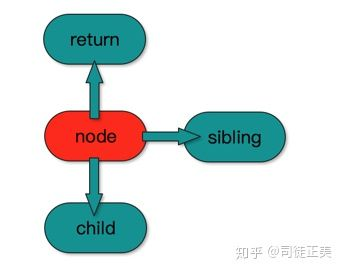
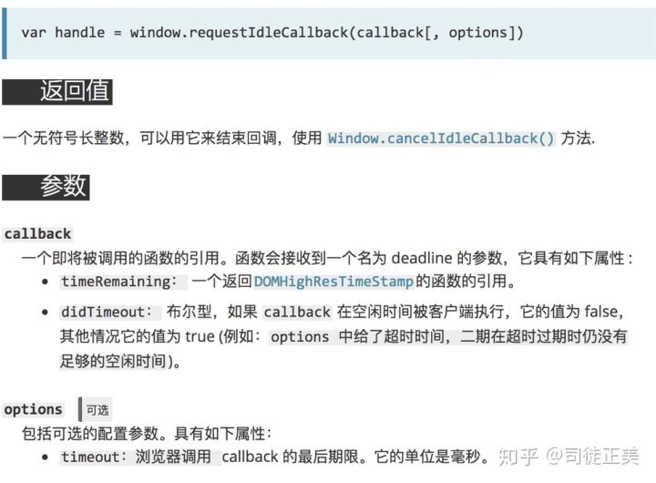
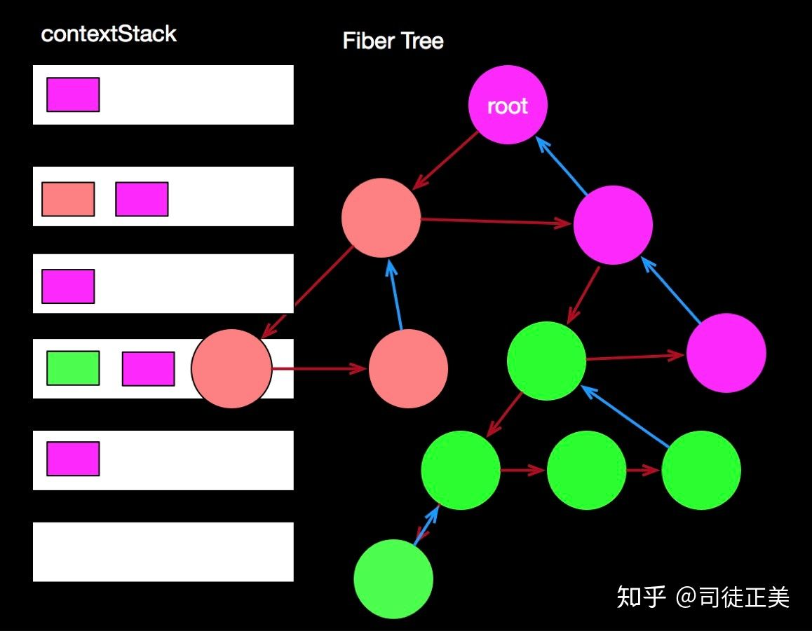
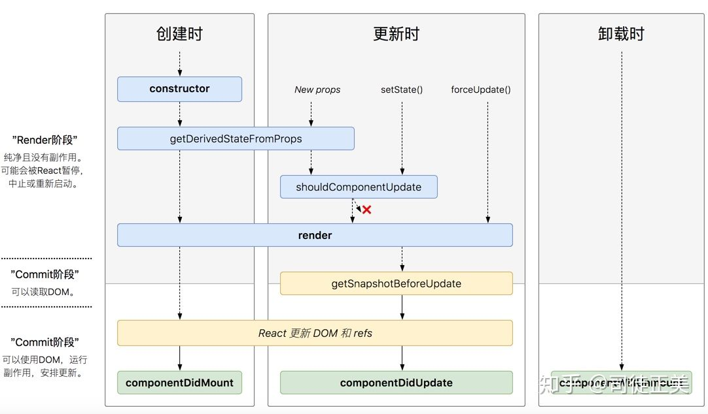
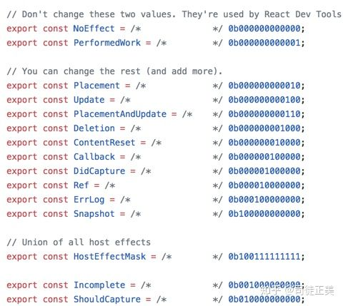
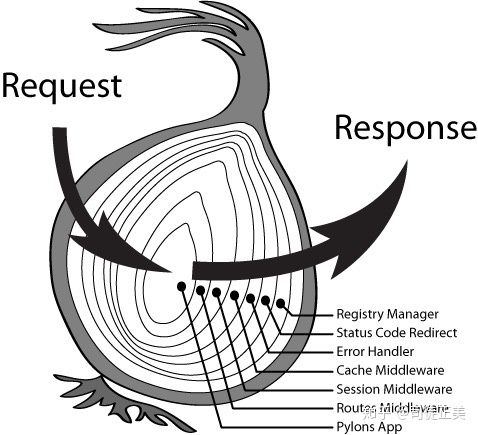
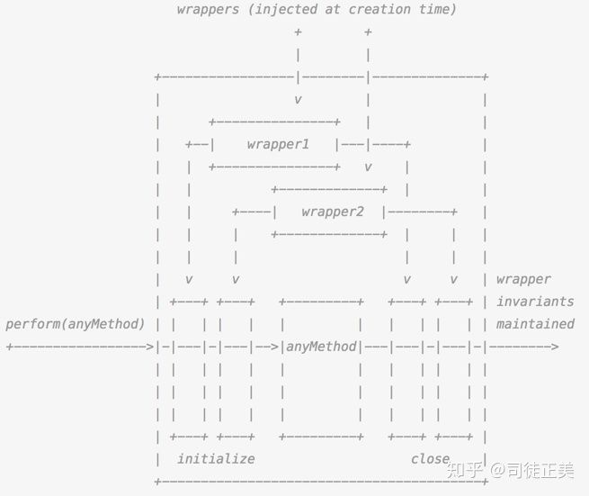

react-fiber-architecture
本篇文章节选自 司徒正美 的一篇知乎文章 https://zhuanlan.zhihu.com/p/37095662
性能优化是一个系统性的工程，如果只看到局部，引入算法，当然是越快越好; 但从整体来看，在关键点引入缓存，可以秒杀N多算法，或另辟蹊径，探索事件的本质，可能用户要的并不是快……
React16启用了全新的架构，叫做Fiber，其最大的使命是解决大型React项目的性能问题，再顺手解决之前的一些痛点。
痛点
主要有如下几个：
组件不能返回数组，最见的场合是UL元素下只能使用LI，TR元素下只能使用TD或TH，这时这里有一个组件循环生成LI或TD列表时，我们并不想再放一个DIV，这会破坏HTML的语义。
弹窗问题，之前一直使用不稳定的unstable_renderSubtreeIntoContainer。弹窗是依赖原来DOM树的上下文，因此这个API第一个参数是组件实例，通过它得到对应虚拟DOM，然后一级级往上找，得到上下文。它的其他参数也很好用，但这个方法一直没有转正。。。
异常处理，我们想知道哪个组件出错，虽然有了React DevTool，但是太深的组件树查找起来还是很吃力。希望有个方法告诉我出错位置，并且出错时能让我有机会进行一些修复工作
HOC的流行带来两个问题，毕竟是社区兴起的方案，没有考虑到ref与context的向下传递。
组件的性能优化全凭人肉，并且主要集中在SCU，希望框架能干些事情，即使不用SCU，性能也能上去。
解决进度
16.0 让组件支持返回任何数组类型，从而解决数组问题; 推出createPortal API ,解决弹窗问题; 推出componentDidCatch新钩子， 划分出错误组件与边界组件， 每个边界组件能修复下方组件错误一次， 再次出错，转交更上层的边界组件来处理，解决异常处理问题。
16.2 推出Fragment组件，可以看作是数组的一种语法糖。
16.3 推出createRef与forwardRef解决Ref在HOC中的传递问题，推出new Context API，解决HOC的context传递问题（主要是SCU作崇）
而性能问题，从16.0开始一直由一些内部机制来保证，涉及到批量更新及基于时间分片的限量更新。
一个小实验
网页中循环插入一万个节点 与 这一万个节点 一次插入100个 分100次插入完，这两个操作性能差别巨大
究其原因是因为浏览器是单线程，它将GUI描绘，时间器处理，事件处理，JS执行，远程资源加载统统放在一起。当做某件事，只有将它做完才能做下一件事。如果有足够的时间，浏览器是会对我们的代码进行编译优化（JIT）及进行热代码优化，一些DOM操作，内部也会对reflow进行处理。reflow是一个性能黑洞，很可能让页面的大多数元素进行重新布局。
浏览器的运作流程
渲染 -> tasks -> 渲染 -> tasks -> 渲染 -> tasks -> ….
这些tasks中有些我们可控，有些不可控，比如setTimeout什么时候执行不好说，它总是不准时; 资源加载时间不可控。但一些JS我们可以控制，让它们分派执行，tasks的时长不宜过长，这样浏览器就有时间优化JS代码与修正reflow！下图是我们理想中的渲染过程
总结一句，就是让浏览器休息好，浏览器就能跑得更快。
##如何让代码断开重连
React团队称React16之前的调度器为栈调度器，栈没有什么不好，栈显浅易懂，代码量少，但它的坏处不能随意break掉，continue掉。根据我们上面的实验，break后我们还要重新执行，我们需要一种链表的结构。
链表是对异步友好的。链表在循环时不用每次都进入递归函数，重新生成什么执行上下文，变量对象，激活对象，性能当然比递归好。
因此Reat16设法将组件的递归更新，改成链表的依次执行。如果页面有多个虚拟DOM树，那么就将它们的根保存到一个数组中。
如果仔细阅读源码，React这个纯视图库其实也是三层架构。
在React15有虚拟DOM层，它只负责描述结构与逻辑;
内部组件层，它们负责组件的更新, ReactDOM.render、 setState、 forceUpdate都是与它们打交道，能让你多次setState，只执行一次真实的渲染, 在适合的时机执行你的组件实例的生命周期钩子;
底层渲染层， 不同的显示介质有不同的渲染方法，比如说浏览器端，它使用元素节点，文本节点，在Native端，会调用oc， java的GUI， 在canvas中，有专门的API方法。。。
虚拟DOM是由JSX转译过来的，JSX的入口函数是React.createElement, 可操作空间不大， 第三大的底层API也非常稳定，因此我们只能改变第二层。
React16将内部组件层改成Fiber这种数据结构，因此它的架构名也改叫Fiber架构。Fiber节点拥有return, child, sibling三个属性，分别对应父节点， 第一个孩子， 它右边的兄弟， 有了它们就足够将一棵树变成一个链表， 实现深度优化遍历。

##如何决定每次更新的数量
在React15中，每次更新时，都是从根组件或setState后的组件开始，更新整个子树，我们唯一能做的是，在某个节点中使用SCU断开某一部分的更新，或者是优化SCU的比较效率。
React16则是需要将虚拟DOM转换为Fiber节点，首先它规定一个时间段内，然后在这个时间段能转换多少个FiberNode，就更新多少个。
因此我们需要将我们的更新逻辑分成两个阶段，第一个阶段是将虚拟DOM转换成Fiber, Fiber转换成组件实例或真实DOM（不插入DOM树，插入DOM树会reflow）。Fiber转换成后两者明显会耗时，需要计算还剩下多少时间。并且转换实例需要调用一些钩子，如componentWillMount, 如果是重复利用已有的实例，这时就是调用componentWillReceiveProps, shouldComponentUpdate, componentWillUpdate,这时也会耗时。
为了让读者能直观了解React Fiber的运作过程，我们简单实现一下ReactDOM.render, 但不保证会跑起来。
1 | var queue = [] |
updateFiberAndView要实现React的时间分片，我们先用setTimeout模拟。我们暂时不用理会updateView怎么实现，可能它就是updateComponentOrElement中将它们放到又一个列队，需再出来执行insertBefore, componentDidMount操作呢！
1 | function updateFiberAndView() { |
里面有一个do while循环，每一次都是小心翼翼进行计时，时间不够就将来不及处理的节点放进列队。
updateComponentOrElement无非是这样：
1 | function updateComponentOrElement(fiber){ |
因此这样Fiber的return, child, sibling就有了，可以happy地进行深度优先遍历了。
##如何调度时间才能保证流畅
刚才的updateFiberAndView其实有一个问题，我们安排了100ms来更新视图与虚拟DOM，然后再安排40ms来给浏览器来做其他事。如果我们的虚拟DOM树很小，其实不需要100ms; 如果我们的代码之后， 浏览器有更多其他事要干， 40ms可能不够。IE10出现了setImmediate，requestAnimationFrame这些新定时器，让我们这些前端，其实浏览器有能力让页面更流畅地运行起来。
浏览器本身也不断进化中，随着页面由简单的展示转向WebAPP，它需要一些新能力来承载更多节点的展示与更新。
下面是一些自救措施：
requestAnimationFrame
requestIdleCallback
web worker
IntersectionObserver
我们依次称为浏览器层面的帧数控制调用，闲时调用，多线程调用， 进入可视区调用。
requestAnimationFrame在做动画时经常用到，jQuery新版本都使用它。web worker在angular2开始就释出一些包，实验性地用它进行diff数据。IntersectionObserver可以用到ListView中。而requestIdleCallback是一个生脸孔，而React官方恰恰看上它。
刚才说updateFiberAndView有出两个时间段，一个给自己的，一个给浏览器的。
requestAnimationFrame能帮我们解决第二个时间段，从而确保整体都是60帧或75帧（这个帧数可以在操作系统的显示器刷新频率中设置）流畅运行。
我们看requestIdleCallback是怎么解决这问题的

它的第一个参数是一个回调，回调有一个参数对象，对象有一个timeRemaining方法，就相当于new Date - deadline，并且它是一个高精度数据， 比毫秒更准确， 至少浏览器到底安排了多少时间给更新DOM与虚拟DOM，我们不用管。第二个时间段也不用管，不过浏览器可能1，2秒才执行这个回调，因此为了保险起见，我们可以设置第二个参数，让它在回调结束后300ms才执行。要相信浏览器，因为都是大牛们写的，时间的调度比你安排更有效率。
于是我们的updateFiberAndView可以改成这样：
1 | function updateFiberAndView(dl) { |
到这里，ReactFiber基于时间分片的限量更新讲完了。实际上React为了照顾绝大多数的浏览器，自己实现了requestIdleCallback。
##批量更新
但React团队觉得还不够，需要更强大的东西。因为有的业务对视图的实时同步需求并不强烈，希望将所有逻辑都跑完才更新视图，于是有了batchedUpdates，目前它还不是一个稳定的API，因此大家使用它时要这样用ReactDOM.unstable_batchedUpdates。
这个东西怎么实现呢？就是搞一个全局的开关，如果打开了，就让updateView不起作用。
1 | var isBatching = false |
事实上，当然没有这么简单，考虑到大家看不懂React的源码，大家可以看一下anujs是怎么实现的：
https://github.com/RubyLouvre/anu/blob/master/packages/fiber/scheduleWork.js#L94-L113
React内部也大量使用batchedUpdates来优化用户代码，比如说在事件回调中setState，在commit阶段的钩子（componentDidXXX）中setState 。
可以说，setState是对单个组件的合并渲染，batchedUpdates是对多个组件的合并渲染。合并渲染是React最主要的优化手段。
##为什么使用深度优化遍历
React通过Fiber将树的遍历变成了链表的遍历，但遍历手段有这么多种，为什么偏偏使用DFS？！
这涉及一个很经典的消息通信问题。如果是父子通信，我们可以通过props进行通信，子组件可以保存父的引用，可以随时call父组件。如果是多级组件间的通信，或不存在包含关系的组件通信就麻烦了，于是React发明了上下文对象（context）。
context一开始是一个空对象，为了方便起见，我们称之为unmaskedContext。
当它遇到一个有getChildContext方法的组件时，那个方法会产生一个新context,与上面的合并，然后将新context作为unmaskedContext往下传。
当它遇到一个有contextTypes的组件，context就抽取一部分内容给这个组件进行实例化。这个只有部分内容的context，我们称之为maskedContext。
组件总是从unmaskedContext中割一块肉下来作为自己的context。可怜！
如果子组件没有contextTypes，那么它就没有任何属性。
在React15中，为了传递unmaskedContext，于是大部分方法与钩子都留了一个参数给它。但这么大架子的context竟然在文档中没有什么地位。那时React团队还没有想好如何处理组件通信，因此社区一直用舶来品Redux来救命。这情况一直到Redux的作者入主React团队。
还有一个隐患，它可能被SCU比较时是用maskedContext，而不是unmaskedContext。
基于这些问题，终于new Context API出来了。首先， unmaskedContext 不再像以前那样各个方法中来往穿梭了，有一个独立的contextStack。开始时就push进一个空对象，到达某个组件需要实例化时，就取它第一个。当再次访问这个组件时， 就像它从栈中弹出。因此我们需要深度优先遍历，保证每点节点都访问两次。

相同的情况还有container，container是我们某个元素虚拟DOM需要用到的真实父节点。在React15中，它会装在一个containerInfo对象也层层传送。
我们知道，虚拟DOM分成两大类，一种是组件虚拟DOM，type为函数或类，它本身不产生节点，而是生成组件实例，而通过render方法，产生下一级的虚拟DOM。一种是元素虚拟DOM，type为标签名，会产生DOM节点。上面的元素虚拟DOM的stateNode（DOM节点），就是下方的元素虚拟DOM的contaner。
这种独立的栈机制有效地解决了内部方法的参数冗余问题。
但有一个问题，当第一次渲染完毕后，contextStack置为空了。然后我们位于虚拟DOM树的某个组件setState，这时它的context应该如何获取呢？React的解决方式是，每次都是从根开始渲染，通过updateQueue加速跳过没有更新的 节点——每个组件在setState或forceUpdate时，都会创建一个updateQueue属性在它的上面。anujs则是保存它之前的unmaskedContext到实例上，unmaskedContext可以看作是上面所有context的并集，并且一个可以当多个使用。
当我们批量更新时，可能有多少不连续的子组件被更新了，其中两个组件之间的某个组件使用了SCU return false，这个SCU应该要被忽视。 因此我们引用一些变量让它透明化。就像forceUpdate能让组件无视SCU一样。
##为什么要对生命周期钩子大换血
React将虚拟DOM的更新过程划分两个阶段，reconciler阶段与commit阶段。reconciler阶段对应早期版本的diff过程，commit阶段对应早期版本的patch过程。
一些迷你React，如preact会将它们混合在一起，一边diff一边patch(幸好它使用了Promise.then来优化，确保每次只更新一个组件) 。
有些迷你React则是通过减少移动进行优化，于是绞尽脑汁，用上各种算法，最短编辑距离，最长公共子序列，最长上升子序列。。。
其实基于算法的优化是一种绝望的优化，就类似玛雅文明因为找不到铜矿一直停留于石器时代，诞生了伟大的工匠精神把石器打磨得美伦美奂。
之所以这么说，因为diff算法都用于组件的新旧children比较，children一般不会出现过长的情况，有点大炮打蚊子。况且当我们的应用变得非常庞大，页面有上万个组件，要diff这么多组件，再卓绝的算法也不能保证浏览器不会累趴。因为他们没想到浏览器也会累趴，也没有想到这是一个长跑的问题。如果是100米短跑，或者1000米竞赛，当然越快越好。如果是马拉松，就需要考虑到保存体力了，需要注意休息了。性能是一个系统性的工程。
在我们的代码里面，休息就是检测时间然后断开Fiber链。
updateFiberAndView里面先进行updateView，由于节点的更新是不可控，因此全部更新完，才检测时间。并且我们完全不用担心updateView会出问题，因为updateView实质上是在batchedUpdates中，里面有try catch。而接下来我们基于DFS更新节点，每个节点都要check时间，这个过程其实很害怕出错的， 因为组件在挂载过程中会调三次钩子/方法（constructor, componentWillMount, render）， 组件在更新过程中会调4次钩子 （componentWillReceiveProps, shouldUpdate, componentWillUpdate）, 总不能每个方法都用try catch包起来，这样会性能很差。而constructor, render是不可避免的，于是对三个willXXX动刀了。
在早期版本中，componentWillMount与componentWillReceiveProps会做内部优化，执行多次setState都会延后到render时进行合并处理。因此用户就肆意setState了。这些willXXX还可以让用户任意操作DOM。 操作DOM会可能reflow，这是官方不愿意看到的。于是官方推出了getDerivedStateFromProps，让你在render设置新state，你主要返回一个新对象，它就主动帮你setState。由于这是一个静态方法，你不能操作instance，这就阻止了你多次操作setState。由于没有instance,也就没有http://instance.refs.xxx，你也没有机会操作DOM了。这样一来，getDerivedStateFromProps的逻辑应该会很简单，这样就不会出错，不会出错，就不会打断DFS过程。
getDerivedStateFromProps取代了原来的componentWillMount与componentWillReceiveProps方法，而componentWillUpdate本来就是可有可无，以前完全是为了对称好看。
在即使到来的异步更新中，reconciler阶段可能执行多次，才执行一次commit，这样也会导致willXXX钩子执行多次，违反它们的语义，它们的废弃是不可逆转的。
在进入commi阶段时，组件多了一个新钩子叫getSnapshotBeforeUpdate，它与commit阶段的钩子一样只执行一次。
如果出错呢，在componentDidMount/Update后，我们可以使用componentDidCatch方法。于是整个流程变成这样：

reconciler阶段的钩子都不应该操作DOM，最好也不要setState，我们称之为轻量钩子。commit阶段的钩子则对应称之为重量钩子*。
##任务系统
updateFiberAndView是位于一个requestIdleCallback中，因此它的时间很有限，分给DFS部分的时间也更少，因此它们不能做太多事情。这怎么办呢，标记一下，留给commit阶段做。于是产生了一个任务系统。
每个Fiber分配到新的任务时，就通过位操作，累加一个sideEffect。sideEffect字面上是副作用的意思，非常重FP流的味道，但我们理解为任务更方便我们的理解。
每个Fiber可能有多个任务，比如它要插入DOM或移动，就需要加上Replacement，需要设置样式，需要加上Update。
怎么添加任务呢？
fiber.effectTag |= Update
怎么保证不会重复添加相同的任务？
fiber.effectTag &= ~DidCapture;
在commit阶段，怎么知道它包含了某项任务？
if(fiber.effectTag & Update){ /*操作属性*/}
React内置这么多任务，从DOM操作到Ref处理到回调唤起。。。

顺便说一下anu的任务名，是基于素数进行乘除。
https://github.com/RubyLouvre/anu/blob/master/packages/fiber/commitWork.js
无论是位操作还是素数，我们只要保证某个Fiber的相同性质任务只执行一次就行了。
此外，任务系统还有另一个存在意义，保证一些任务优先执行，某些任务是在另一些任务之前。我们称之为任务分拣。这就像快递的仓库管理一样，有了归类才好进行优化。比如说，元素虚拟DOM的插入移动操作必须在所有任务之前执行，移除操作必须在componentWillUnmount后执行。这些任务之所以是这个顺序，因为这样做才合理，都经过高手们的严密推敲，经过React15时代的大众验证。
##Fiber的连体婴结构
连体婴是一个可怕的名词，想想就不舒服，因为事实上Fiber就是一个不寻常的结构，直到现在我的anujs还没有很好实现这结构。Fiber有一个叫alternate的属性，你们称之为备胎，替死鬼，替身演员。你也可以视它为git的开发分支，稳定没错的那个则是master。每次 setState时，组件实例stateNode上有一个_reactInternalFiber的对象，就是master分支，然后立即复制一个一模一样的专门用来踩雷的alternate对象。
alternate对象会接受上方传递下来的新props，然后从getDerivedStateFromProps得到新state，于是render不一样的子组件，子组件再render，渐渐的，master与alternate的差异越来越大，当某一个子组件出错，于是我们又回滚到该边界组件的master分支。
可以说，React16通过Fiber这种数据结构模拟了git的三种重要操作， git add, git commit, git revert。
有关连体婴结构的思考，可以参看我另一篇文章，这里就不再展开。
##中间件系统
说起中间件系统，大家可能对koa与redux里面的洋葱模型比较熟悉。

早在React15时代，已经有一个叫Transaction的东西，与洋葱模型一模一样。在 Transaction 的源码中有一幅特别的 ASCII 图，形象的解释了 Transaction 的作用。

简单地说，一个Transaction 就是将需要执行的 method 使用 wrapper 封装起来，再通过 Transaction 提供的 perform 方法执行。而在 perform 之前，先执行所有 wrapper 中的 initialize 方法；perform 完成之后（即 method 执行后）再执行所有的 close 方法。一组 initialize 及 close 方法称为一个 wrapper，从上面的示例图中可以看出 Transaction 支持多个 wrapper 叠加。
这个东西有什么用呢？ 最少有两个用处，在更新DOM时，收集当前获取焦点的元素与选区，更新结束后，还原焦点与选区（因为插入新节点会引起焦点丢失，document.activeElement变成body，或者是autoFocus，让焦点变成其他input，导致我们正在输入的input的光标不见了，无法正常输入）。在更新时，我们需要保存一些非受控组件，在更新后，对非受控组件进行还原（非受控组件是一个隐涩的知识点，目的是让那些没有设置onChange的表单元素无法手动改变它的值）。当然了，contextStack, containerStack的初次入栈与清空也可以做成中间件。中间件就是分布在batchedUpdates的两侧，一种非常易于扩展的设计，为什么不多用用呢!
##总结
React Fiber是对React来说是一次革命，解决了React项目严重依赖于手工优化的痛点，通过系统级别的时间调度，实现划时代的性能优化。鬼才般的Fiber结构，为异常边界提供了退路，也为限量更新提供了下一个起点。React团队的人才济济，创造力非凡，别出心裁，从更高的层次处理问题，这是其他开源团队不可多见。这也是我一直选择与学习React的原因所在。
但是和所有人一样，我最初学习React16的源码是非常痛苦的。后来观看他们团队的视频，深刻理解时间分片与Fiber的链表结构后，渐渐明确整个思路，不需要对React源码进行断点调试，也能将大体流程复制出来。俗话说，看不如写（就是写anujs，欢迎大家加star, https://github.com/RubyLouvre/anu），与不如再复述出教会别人。于是便有了本文。